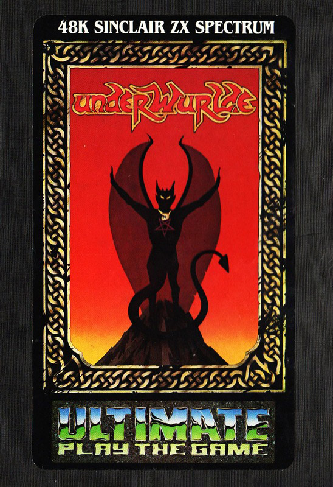
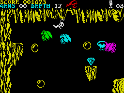
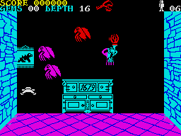

Underwurlde


{kind=link}

| Publisher: | Ultimate Play the Game |
| Price: | £9.95 |
| Year: | 1984 |
| Source: | CRASH, Issue 12 |

Ultimate have an uncanny knack of releasing games just too late to be able to do them justice in a review because the issue is usually on its way to ‘bed’. But with Underwurlde and Knight Lore they were late enough that they missed the last issue altogether and thus gave enough time for this one! As is well known by Sabre Wulfers, Underwurlde is the second ‘Sabreman’ game, but arguments that Sabre Wulf was Atic Atac with greenery, hold little water with the new game.

The perspective is different for a start — you view the game from the audiences’ view of a stage (which makes mapping rather harder), although all the locations do logically connect to make a massive maze, seemingly bigger even than the one in Sabre Wulf. But one of the principal changes, and the first time that Ultimate have employed the device, is that the nasties do not kill you off — they just get in the way. It is possible to die however! We’ve become quite accustomed by now to Ultimate’s oblique inlay cards which give the flavour but no playing hints for the game. Once again it’s a question of sorting out the hows, wheres and what fors. Sabreman, recognisably the same intrepid hero from the previous game, pith helmet intact from his encounters in the jungle, has entered the Underwurlde, to seek the Devil in his Lair and, of course, the way out... As with Sabre Wulf, scoring is by percentage of locations visited and a score accumulated by nasties killed and objects collected.
CRITICISM

‘It looks as if the hyper load is here to stay because even Ultimate is using one now. Is the normal Spectrum loading system dead? Underwurlde is certainly no Atic Atac part three — it’s a totally original game that will keep you enthralled for ages. From what I can make out from the usual Ultimate instructions all you have to do is find your way out — simple enough, no! There are quite a few things to hinder and help you, such as the plethora of Ultimate nasties. But these don’t kill, they just make you bounce about all over the place and the only way I’ve found to die is to fall a long way. This is a mixed blessing because when you seem to be doing well, you seem to fall a lot. Sometimes it seems practically impossible to finish a game when you want to. Underwurlde must take up every available byte because the maze is so huge and complex, something that became apparent after playing for twenty minutes and only scoring a paltry 10! Ultimate’s graphics need no explanation, but an obvious item missing is the Hall of Fame (but I’m sure the spare bytes from this went to a good cause). Ultimate have come up with another excellent game featuring the walking, dancing and now jumping Sabreman (all the nasties in the underwurlde seem to have scared him so much he’s shrunk — or has he just had a wash to get rid of the jungle stink)? Underwurlde is more worthy of the 10 quid price tag than was Sabre Wulf so there shouldn’t be any complaints about that. I especially liked the volcanic bubbles on which you can stand and ride, and the eagles which carry you all over the place. This is more of an adventure than Sabre Wulf ever was, so you will have to pick up certain objects to get past certain creatures. If you don’t like the QWERT layout, then you will be disappointed to learn that it’s been used again on this game, but I found it easier to use than a joystick because you don’t need down much and the up key is also used for jump. You just can’t fail with this game, and if piracy means an end to games like this, then piracy’s not really worth it, is it?’
‘Underwurlde is definitely Ultimate’s best game yet. It has super sound and graphics, as you would expect from ACG, plus (as far as I can tell at this stage) an even more complex playing area than SW. Moving around from level to level by skilfully jumping up and down the screen is made even harder by the various Gremlins and Harpies knocking you flying in mid jump. Sabreman has lost his sword but instead he can use various different weapons for several different purposes such as getting past the guardians. I really enjoyed playing Underwurlde and highly recommend it to everyone, although it’s a shame about the high price.’
‘At a first glance, Sabreman resembles Bugaboo the flea. It’s that athletic leap that does it. This huge jump combined with the fact that the nasties don’t kill but do hinder, makes playing Underwurlde quite a different experience from anything Ultimate have done before — and it looks as though it should lead to some staggeringly high scores since killing the gremlins is essential if you are to keep your precarious balance! As usual, the graphics, movement and detail is superb — so is the sound. It is important to get a weapon as soon as you start, fortunately there is the red bubble gun, otherwise you can get hemmed something terrible by the nasties. The frustration level in this game is pitched about right, and there is always plenty going on. I liked the ropes and the large gaseous bubbles — it’s playing details like this that keep Ultimate well ahead in the arcade stakes.’
COMMENTS
| Control keys: | Q/W left/right, R/E up and jump/down, T to fire a possessed weapon, CAPS to V drop from rope, B to SPACE pick up/drop a weapon |
| Joystick: | Kempston, AGF, Protek, Sinclair 2 |
| Keyboard play: | Very responsive, although the QWERT combination is awkward, all three reviewers agreed that they work quite well in this particular game |
| Use of colour: | Excellent |
| Graphics: | Large, smooth, fast and detailed — excellent |
| Sound: | Very good, although it is restricted mostly to ‘contact’ noises |
| Skill levels: | 1 |
| Lives: | 6 |
| Screens: | Unknown at this time, but loads! |
| Special features: | Hyper load |
| General rating: | Excellent. |
| Use of computer: | 89% |
| Graphics: | 95% |
| Playability: | 96% |
| Getting started: | 90% |
| Addictive qualities: | 96% |
| Value for money: | 86% |
| Overall: | 92% |